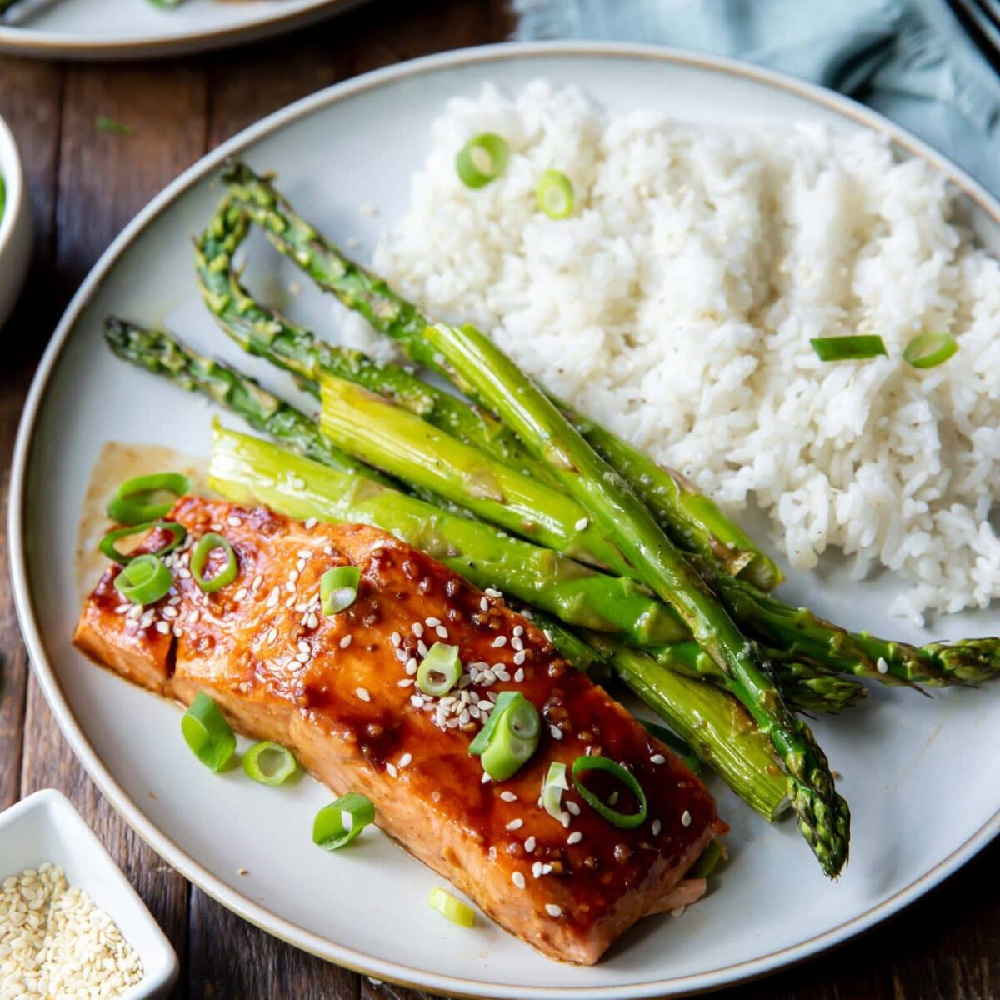

Garlic Butter Salmon

Ingredients needed
- Salmon fillets
- 1/2 tsp salt
- 1/4 tsp black pepper
- 1 1/2 tsp olive oil
- 2 garlic cloves
- 6 tsp butter
- 1 tsp lemon juice
- 2 tsp chopped parsley
Recipe
- Take salmon out of fridge 30 minutes prior to cooking. Sprinkle both sides with salt and pepper.
- Heat oil in large non stick skillet over medium-high heat. Add salmon, presentation side (ie. curved side) down, and cook for 3 minutes until golden.
- Turn salmon and cook the other side for 1 minute. THEN put the butter in.
- Once butter is melted and foaming, add garlic and immediately start spooning the bubbling butter continuously over the salmon for 1 1/2 minutes. To do this, tilt the pan slightly so the butter pools on one side. Use a large spoon to scoop the butter up and spoon it over the salmon.
- Check Internal temperature of salmon. It should be 50°C/122°F for medium-rare (optimum juiciness pull temp). Remove salmon to a plate. Rest for 3 minutes – it will rise to 53°C/127°F.
- Put pan back on unlit stove to keep butter hot. Add lemon juice.